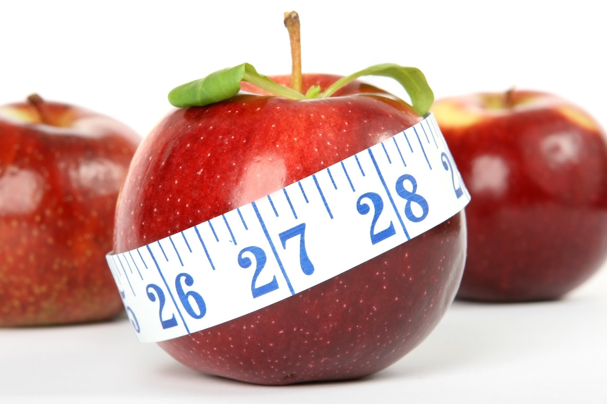

Cuatro mitos sobre la pérdida de peso
Podría apostar que más de una vez has oido o dicho alguna de estas cosas. Son mitos que se han creado en el imaginario de las personas alrededor de la perdida de peso y que si bien, algunos parecieran tener lógica, realmente ninguno es cierto. Lastimosamente, estos mitos se han creado porque hay personas que hacen creer a otras menos informadas cosas que no son para sostener ciertos métodos para perder peso. Empecemos uno por uno:
- 1. Comer en la noche engorda.
Este es tal vez el mito más grande que existe. Si bien comer en la noche si tiene algunas consecuencias en el cuerpo, no está comprobado en ningún lugar o estudio que comiendo en la noche haga que uno suba más o menos de peso que comiendo en la mañana. Para el cuerpo un sanduche de atún es exactamente el mismo a las 9 am o a las 9 pm, es la misma cantidad de calorías, la misma cantidad de proteína, grasa y carbohidrato, el cuerpo nunca dice "oh! Es atún a las 9 pm!".
Aunque no hay una relación directa entre comer en las noches y su efecto en la perdida o aumento de peso, si hay cosas que se pueden ver afectadas por esto. Una de ellas es el sueño, comer alimentos muy pesados justo antes de dormir puede contribuir a que no descansemos de la forma adecuada y esto si es algo que, a corto y mediano plazo, puede afectar tu progreso.
- 2. Tomar mucha agua ayuda a perder peso.
¡Esto es un gran mito! El agua en su composición natural es algo que no contiene calorías por lo que no va a aportar calorías a tu dieta diaria, pero eso es muy diferente a que te vaya a ayudar a perder peso. Sobre este mito he oido cosas puntuales como "uno debe tomar 8 vasos de agua al día"... mmmm pues sí y no. Realmente 8 vasos de agua al día es una medida un poco arbitraría, sí, claro, uno debe tomar suficiente agua en el día, es necesario para el cuerpo, sin embargo, decir que todos debemos tomar una cantidad determinada no es tan cierto. Tomar determinada cantidad de agua al día va a ayudar a tu cuerpo a mantenerse hidratado, más no a perder peso.
Así como uno debería consumir cierta cantidad de calorías en el día, pasa lo mismo con el agua. Para poner un ejemplo muy explicativo, una persona que dura 3 o 4 horas de su día haciendo ejercicio, seguramente necesitará mucha más agua de lo que puede necesitar una persona que está sentada en la oficina durante 8 horas.
- 3. La grasa es el enemigo #1.
"Si comes grasa te vas a engordar", nuevamente, sí y no. La grasa es un macro nutriente esencial para el cuerpo humano, comer alimentos que tengan grasa no quiere decir automáticamente que uno va a engordar, comer grasa en exceso haciendo que las calorías ingeridas sean más que las quemadas es lo que va a hacer que uno suba de peso. Las grasas juegan una parte muy importante en la regulación hormonal y además es lo que permite que el cuerpo tenga reservas de energía a largo plazo.
Acá es importante anotar que existen diferentes tipos de grasas y que en lo posible, es mejor alejarse de las grasas saturadas y grasas trans, reemplazándolas por grasas buenas como el omega-3 y el omega-6 que podemos encontrar en el pescado, las nueces, el aguacate o las aceitunas.
- 4. Todo lo "light" ayuda a bajar de peso.
Este es un tema que tiene diferentes aristas. En teoría, o como nos han vendido las cosas "light", tiene sentido que sean alimentos que "ayuden a bajar de peso". Sin embargo, el tema principal es que los alimentos como tal no son los que harán que alguien gane o pierda peso, lo importante es estar en un deficit calórico (link a artículo de deficit calórico). El problema con los alimentos "light", es que generalmente nunca nos dicen ese alimento es "light" en qué exactamente. Es decir, una cosa es que sea bajo en grasa, otra que sea bajo en carbohidrato y otra es que sea bajo en calorías.
Al empezar a comprender la diferencia en el contenido de los alimentos "light", podemos entender que tan "light" realmente son. Nos han vendido muchas veces que si estás a dieta, por ejemplo, es mejor comer pan integral porque eso es "light", pues realmente no, la gran diferencia entre un pan normal y un pan integral es generalmente la cantidad de fibra que tiene y posiblemente un variación en calorías muy baja. Así como este ejemplo del pan hay muchos más, por lo que realmente es bueno que sepamos esa comida "light" en qué se diferencia realmente de la comida regular.
Lo más importante que debemos tener en cuenta es no quedarnos con la primera información que nos llega. Es importante sobre todo cuando se trata de temas de nutrición que investiguemos y busquemos información de distintas fuentes sobre ese conocimiento general que hay en la calle, incluso con lo que han leído acá, vayan a otros lugares y corroboren esta información.
Blog